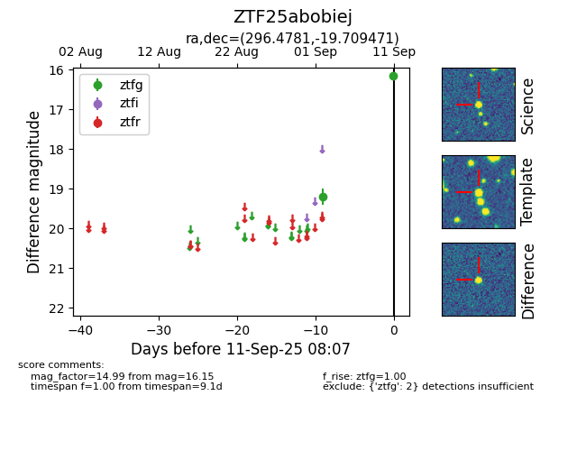

FINK: ZTF25abobiej
Lasair: ZTF25abobiej
ALeRCE: ZTF25abobiej
ZTF25abobiej (ztf,fink)
equatorial (ra, dec) = (296.4781,-19.70947)
galactic (l, b) = (20.6568,-20.55209)

last atlaso=19.11, ztfg=16.15, ztfr=15.38
1 atlaso, 2 ztfg, 1 ztfr detections